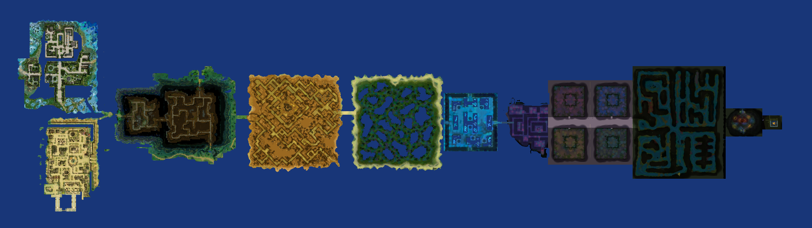

The Armory opens 24 Aug
- Every class and race now has a build simulator, live from the server data.
- Base attributes explain what one point buys -- and where the milestones land.
- Map, boss and attribute references linked from the Armory header.
prototype Sample entries — not a live feed.

prototype One live map render; the rest are empty frames awaiting real captures rather than stand-in images.
prototype Disabled on purpose — this does not send anything anywhere. Do not enter a real password.
| 1 | RedbeardSolar Bosuns | Crusader | 85 |
| 2 | MarisolTide Wardens | Seal Master | 85 |
| 3 | QuillSolar Bosuns | Sharpshooter | 84 |
| 4 | AnselmThe Undertow | Champion | 82 |
| 5 | WrenTide Wardens | Cleric | 81 |
| 6 | CorvoSaltborn | Voyager | 79 |
prototype Sample names — not live standings.
Join the crewRaids, trade and patch chatter — the fastest way to find a party.
prototype Invite link not wired up yet.